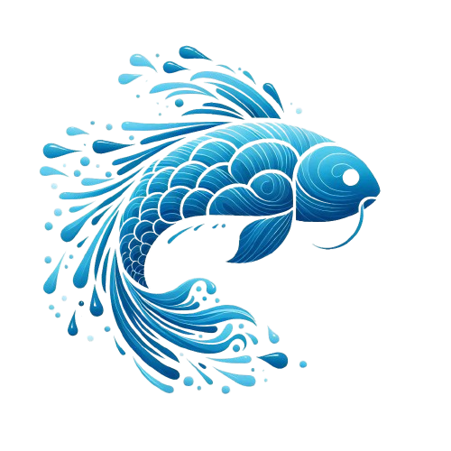

Quem Somos Nós?
Nossa Missão
Na Bluemy, nossa missão é melhorar a aquicultura global através da inovação tecnológica, promovendo práticas sustentáveis que beneficiem tanto os produtores quanto o meio ambiente. Acreditamos que a combinação de ciência, tecnologia e comprometimento ambiental pode criar um futuro mais sustentável para a produção de alimentos marinhos.
Nossa visão é liderar a revolução da aquicultura, utilizando inteligência artificial (IA) e outras tecnologias avançadas para enfrentar os desafios ambientais e de eficiência na criação de peixes. Almejamos um mundo onde a produção de frutos do mar seja harmoniosa com os ecossistemas aquáticos, garantindo a saúde dos nossos oceanos e a segurança alimentar das gerações futuras.
Nossos Valores
- Inovação: Buscamos constantemente novas soluções e tecnologias para melhorar a aquicultura e promover a sustentabilidade.
- Comprometimento Ambiental: Nosso trabalho é pautado pela responsabilidade ambiental e pelo respeito aos ecossistemas aquáticos.
- Excelência: Buscamos a mais alta qualidade em tudo o que fazemos, desde o desenvolvimento de nossas tecnologias até o suporte aos nossos clientes.
- Transparência: Valorizamos a honestidade e a transparência em todas as nossas ações e relações com parceiros e clientes.
- Colaboração: Acreditamos no poder da colaboração e parceria para alcançar nossos objetivos e promover mudanças positivas na aquicultura.
Nossa Equipe
Conheça os criadores!Compromisso com o Futuro
Estamos comprometidos em continuar nossa busca por inovações que tornem a aquicultura mais sustentável e eficiente. A Bluemy está constantemente investindo em pesquisa e desenvolvimento para expandir e melhorar nossas tecnologias, sempre com a missão de proteger os recursos marinhos e contribuir para a segurança alimentar global.
Junte-se a nós
Convidamos você a se juntar a nós nessa jornada rumo a um futuro mais sustentável e inovador para a aquicultura. Seja você um produtor, um parceiro de negócios ou um entusiasta da sustentabilidade, há um lugar para você na nossa missão de transformar a produção de alimentos marinhos.
